Timing Belt: Service and Repair
Timing Belt - Removal
CAUTION: Inspect the water pump when replacing the timing belt.
NOTE:
- Turn the crankshaft so that the No.1 piston is at top dead center.
- Before removing the timing belt, mark its direction of rotation if it is to be reused.
- Anti-theft radios have a coded theft protection circuit. Be sure to get the customer's code number before:
* Disconnecting the battery.
* Removing the No.39 (10 A) fuse in the under- hood fuse/relay box.
* Removing the radio.
- After service, reconnect power to the radio and turn it on.
- When the word "CODE" is displayed, enter the customer's 5-digit code to restore radio operation.
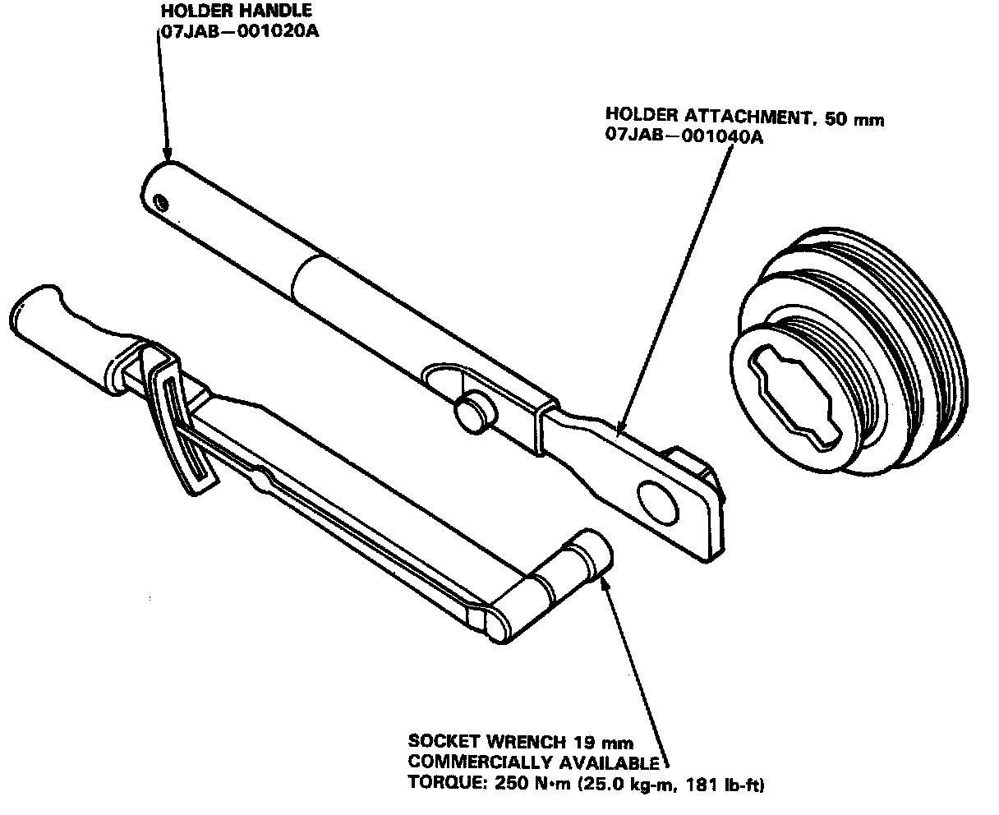
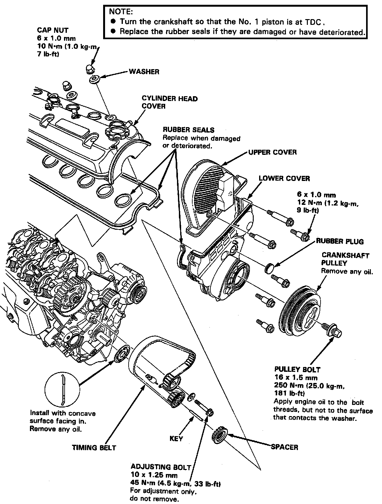
1. Disconnect the negative terminal from the battery.
2. Remove the engine wire harness.
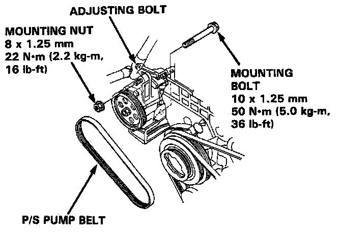
3. Loosen the mounting bolt/nut and adjusting bolt, then remove the power steering (P/S) pump belt.
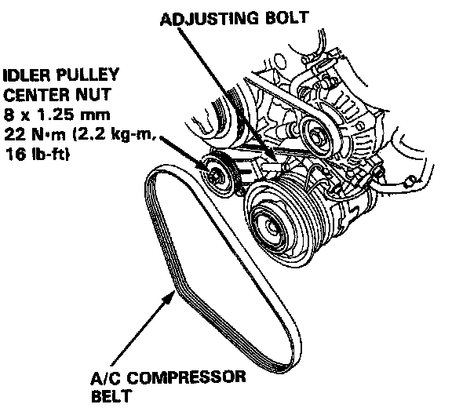
4. Loosen the idler pulley center nut and adjusting bolt, then remove the air conditioning (A/C) compressor belt.
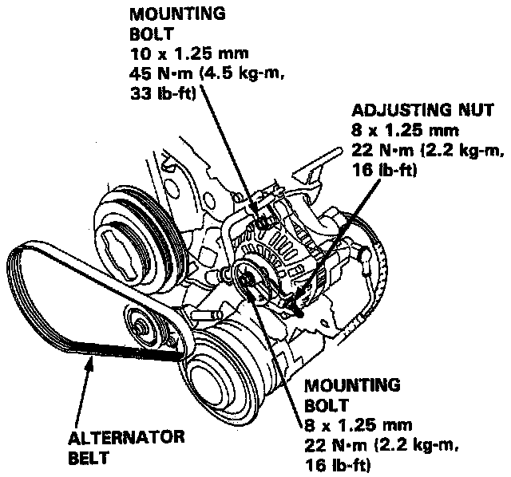
5. Loosen the mounting bolts and adjusting nut, then remove the alternator belt.
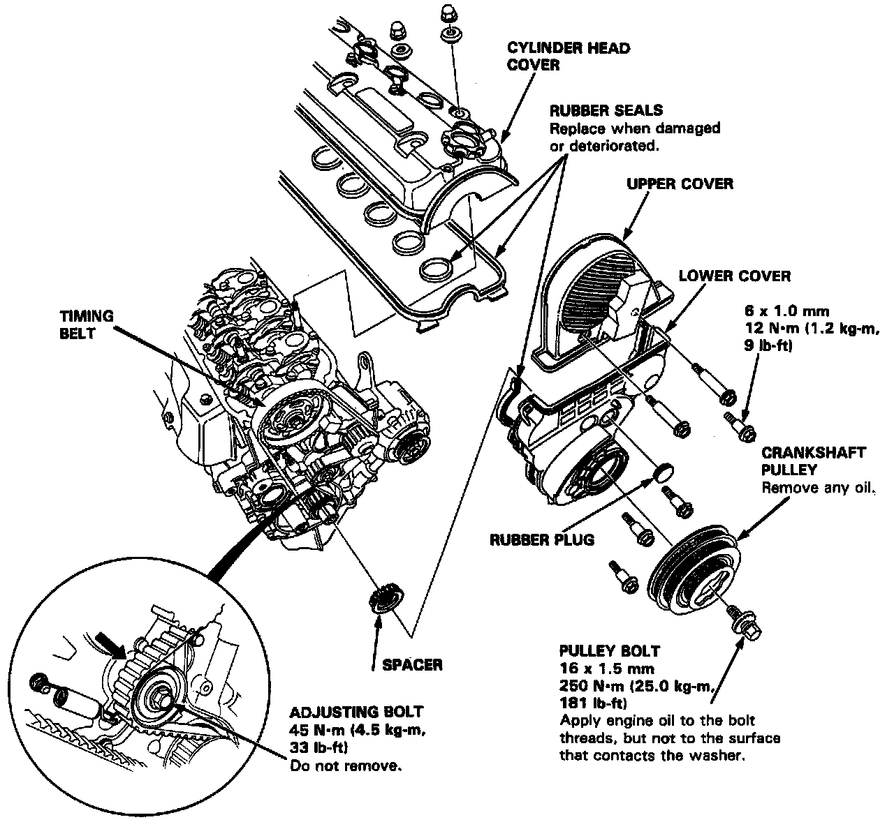
6. Remove the cylinder head cover.
7. Remove the upper cover.
8. Remove the crankshaft pulley.
9. Remove the lower cover.
10. Loosen the timing belt adjusting bolt 180°.
11. Push the tensioner to release tension from the belt, then retighten the adjusting bolt.
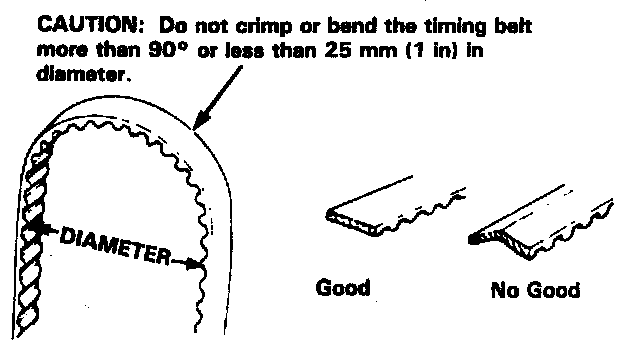
12. Remove the timing belt from the pulleys.
Installation
1. Install the timing belt in the reverse order of removal.
Only key points are described here.
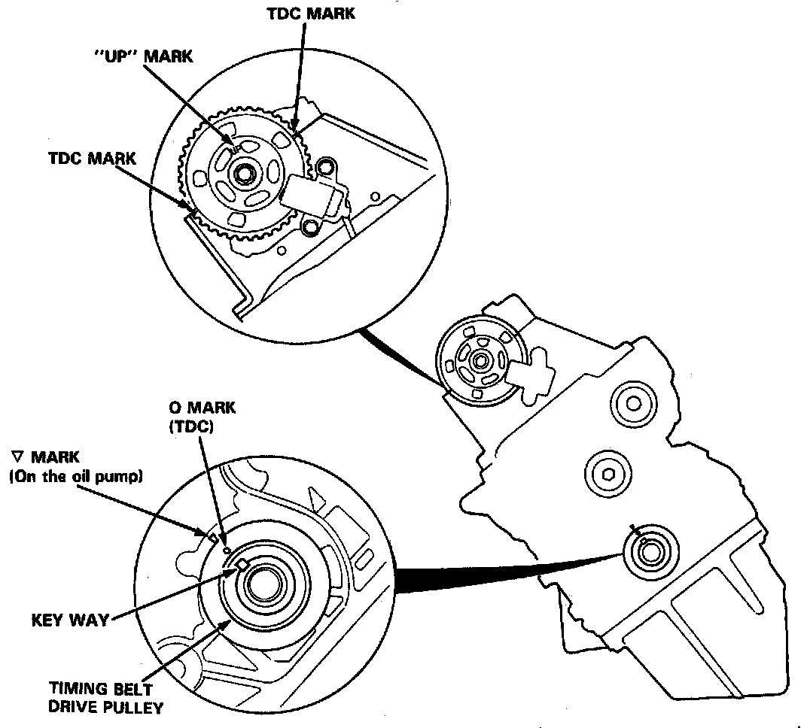
2. Position the crankshaft and the camshaft pulleys as shown before installing the timing belt.
A. Set the crankshaft so that the No.1 piston is at top dead center (TDC).
NOTE: Align the 0 mark on the teeth side of the timing belt drive pulley to the V pointer on the oil pump.
B. Align the TDC marks on the camshaft pulley with the cylinder head upper surface.
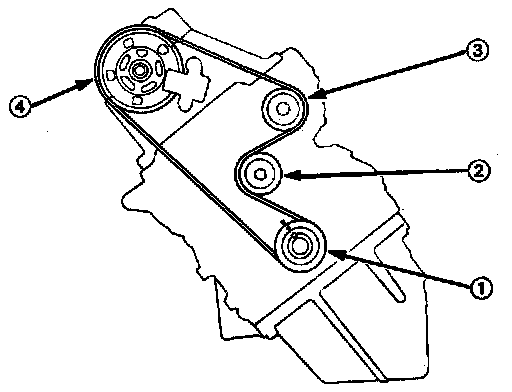
3. Install the timing belt tightly in the sequence shown.
(1) Timing Belt Pulley Crankshaft
(2) Adjusting Pulley
(3) Water Pump Pulley
(4) Camshaft Pulley
4. Loosen the adjusting bolt, and retighten it after tensioning the belt.
5. Rotate the crankshaft about 5 or 6 turns counter clockwise so that the belt may fit in position on the pulleys.
6. Adjust the timing belt tension.
Crankshaft Pulley:
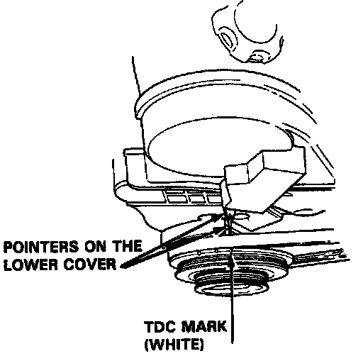
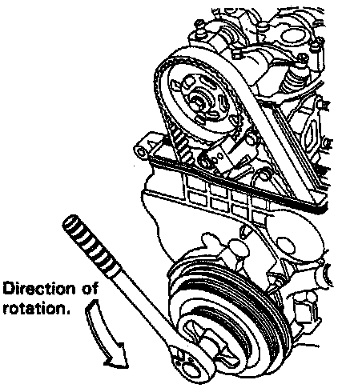
7. Check the crankshaft pulley and the camshaft pulley at TDC.
Camshaft Pulley:
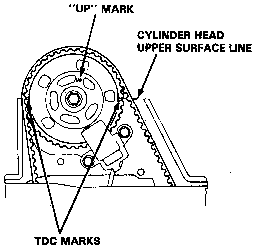
8. If the camshaft pulley is not positioned at TDC, remove the timing belt and adjust the positioning (see step 2), then reinstall the timing belt.
NOTE:
- After installing the timing belt, retorque the crankshaft pulley bolt to 250 N.m (25.0 kg.m, 181 lb.ft).
- After installation, adjust the tension of each belt.